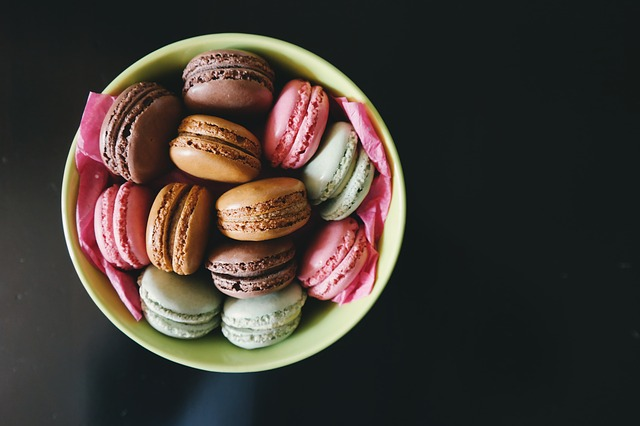
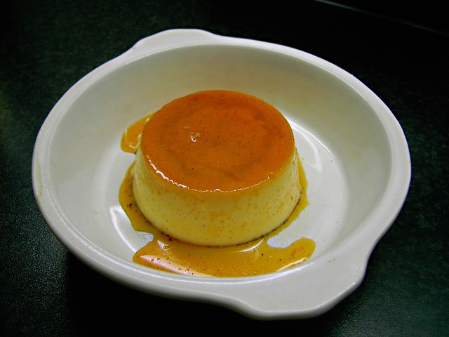
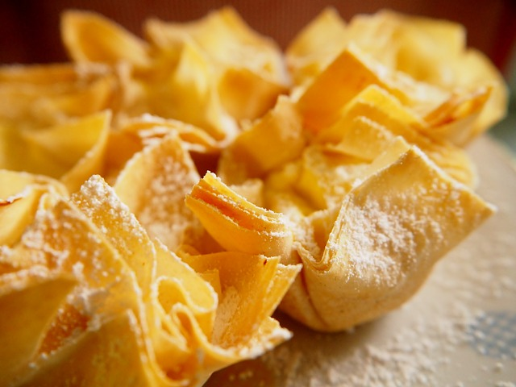

ALFAJORES DE MAIZENA |
Ingredientes
- 200 gr harina
- 300 gr Maizena
- 1/2 cucharadita bicarbonato de sodio
- 2 cucharadita(s) polvo de hornear
- 200 gr manteca
- 150 gra azúcar
- 3 yemas
- 1 cucharadas coñac
- 1 cucharada esencia de vainilla
- 1 cucharadita ralladura de limón
- Colorantes vegetales
- Dulce de leche para rellenar
|
 |
| Paso a paso |
- Tamizar Maizena®, la harina, el bicarbonato y el polvo para hornear
- En un bol, batir la manteca con azúcar. Agregar las yemas de a una, mezclando bien cada vez, luego el coñac y poco a poco los ingredientes secos ya tamizados. Incorporar la esencia de vainilla y la ralladura de limón y mezclar bien.
- Separar la masa en tres partes, dejar una parte blanca y colorear las otras dos con los colores elegidos.
- Formar una masa, sin amasarla, y estirar de 1/2 cm de espesor sobre una mesa espolvoreada con harina. Cortar con moldes en forma de corazón.
- Colocar en una placa limpia y cocinar en horno moderado durante 15 minutos. Desmoldar y enfriar.
- Formar los alfajores, uniéndolos de a dos con dulce de leche en el medio.
- Pintarles el borde con dulce y pasarlos por coco rallado.
|
|
Inicio
|
BUDIN DE PAN |
Ingredientes
- 500g de pan
- 1 litro de leche
- 6 huevos
- 250g de azúcar
- Ralladura de limón
- Extracto de vainilla
- 250g de azúcar extra para hacer el caramelo
|
 |
| Paso a paso |
- Prepara caramelo con el azúcar extra y carameliza una budinera o un molde de savarín de 30cm de diámetro. Deja enfriar.
- Retírale la corteza al pan y córtalo en cubos o en rodajas y remójalo en el litro de leche tibia.
- Mezcla los 6 huevos con el ¼ de azúcar, la ralladura de limón y el extracto de vainilla. Incorpora después la mezcla del pan y la leche.
- Vuelca la preparación del pudín de pan sobre el caramelo frío y coloca el molde dentro de otro con agua para cocinar a baño María durante 45-60 minutos a 180º C.
- Retira, deja enfriar y desmolda.
|
|
Inicio
|
PASTELITOS DE MEMBRILLO Y BATATA |
Ingredientes
- 24 tapas de pastelitos
- Dulce de membrillo o batata
- Aceite para freir.
|
 |
| Paso a paso |
- Colocar un cubo de dulce de membrillo en el centro de cada Tapa para Pastelitos La Salteña.
- Pincelar con agua alrededor del dulce de membrillo
- Cubrir con otro cuadrado de masa con las puntas superpuestas.
- Pellizcar de abajo la masa, presionando en los bordes para cerrar los pastelitos.
- Freír con abundante aceite o grasa caliente hasta que se doren.
- Retirar y reservar
- Si se desea, pasar por almíbar o espolvorear con azúcar impalpable
|